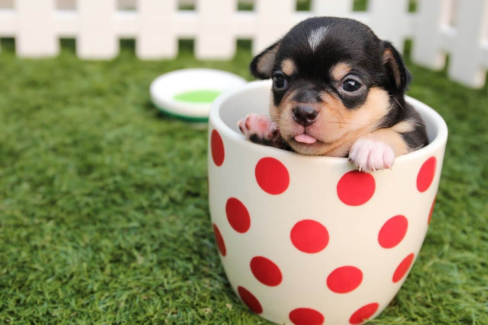
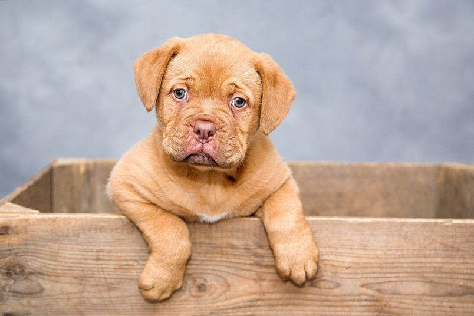

Meu cachorro
Parabéns pelo novo membro da família!
Esta é uma fase muito importante na vida do cãozinho,
que está começando a conhecer o mundo, as pessoas e as coisas
ao seu redor por meio do olfato. Nessa idade, o cãozinho está
cheio de energia, então é importante que você brinque muito com
ele e esteja presente para ajudar com sas descobertas.

Meu amigo
Em relação à alimentação, é importante que seja respeitado o período
de amamentação antes de mudar para os alimentos sólidos. Nessa hora,
a melhor opção é uma ração específica para filhotes.
Lembre-se de que as necessidades nutricionais do cão
são diferentes das nossas, e isso é ainda mais crítico nessa fase
inicial de vida, então não dê comida para ele e siga sempre
as orientações do médico veterinário.
